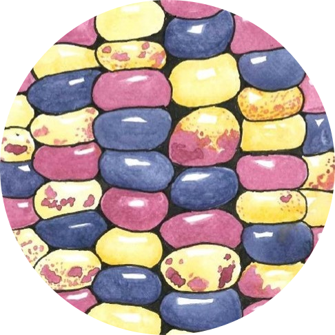

| Start | End | Link | Presenter | Description | Location |
|---|---|---|---|---|---|
| 01:00 | BREAKFAST (Ballrooms B&C) | ||||
| 01:30 | REGISTRATION (Registration Lobby) |
66th Annual Maize Genetics Meeting

Hello and welcome to the Maize Meeting demonstration website!
This is the home page. Announcements and today’s schedule can be displayed here for easy access. Here’s what this could look like for Friday March 1st.
Announcements:
Today’s Schedule (Friday, March 1, 2024):
SESSION 2 – THE GENES THAT MAKE MAIZE
Madelaine Bartlett
| Start | End | Link | Presenter | Description | Location | |
|---|---|---|---|---|---|---|
| 3 | 02:00 | ANNOUNCEMENTS | (Ballroom A) | |||
| 4 | 02:00 | 02:20 | T1 | Xiquan Gao, Nanjing Agricultural University | An exocyst component ZmEXO70F4 coordinates with jasmonate signaling pathway to regulate maize immunity to Gibberella stalk rot | |
| 5 | 02:20 | 02:40 | T2 | Annis Richardson, University of Edinburgh | Crazy leaves and truffula trees | |
| 6 | 02:40 | 03:00 | T3 | Yun Luo, Huazhong Agricultural University | A thiamin pyrophosphate kinase encoding gene ZmTDPK2 finely regulates ear length and grain yield in maize | |
| 7 | 03:00 | 03:20 | T4 | George Chuck, University of California Berkeley | A novel domestication gene establishes developmental boundaries | |
| 8 | 03:20 | 03:40 | T5 | Mark Lubkowitz, Saint Michael's College | Leaf angle and curricular innovation: a CURE for research and undergraduate | |
| 9 | 03:40 | 04:00 | Poster Lightning Talks | |||
| 10 | 04:00 | BREAK | Ballroom ABC Lobby |
SESSION 3 – KEYNOTE SPEAKER AND McCLINTOCK PRIZE PRESENTATION
Petra Wolters
| Start | End | Link | Presenter | Description | Location | |
|---|---|---|---|---|---|---|
| 11 | 04:30 | 04:40 | Introduction | (Ballroom A) | ||
| 12 | 04:40 | 05:30 | KS3 | Terri Long, North Carolina State University | From the stars to your table - plants as complex conduits for iron nutrition | |
| 13 | 05:30 | 05:40 | Mark Lubkowitz, Saint Michael’s College | McClintock Prize Presentation Introduction | ||
| 14 | 05:40 | 06:30 | M1 | Caroline Dean, John Innes Center | Polycomb memory to register environmental exposure |
| Start | End | Link | Presenter | Description | Location | |
|---|---|---|---|---|---|---|
| 15 | 06:30 | LUNCH (Ballrooms B&C) | ||||
| 16 | 06:30 | MaGNET/PUI Networking Lunch | (301A) | |||
| 17 | 06:30 | MGC BoD and MGAC Lunch | (302A) | |||
| 18 | 07:30 | POSTER SESSION 1 (Ballrooms B&C) | ||||
| 19 | 07:30 | Presenters should be at odd-numbered posters. | ||||
| 20 | 09:00 | Presenters should be at even numbered posters. |
SESSION 4 – NEW TOOLS AND RESOURCES I
Lander Geadelmann
| Start | End | Link | Presenter | Description | Location | |
|---|---|---|---|---|---|---|
| 21 | 10:40 | 11:00 | T6 | Jonathan Matheka, University of Wisconsin-Madison | Optimized ZmWOX2A-based transformation system enhances somatic embryogenesis, transformation efficiency, and gene editing efficiency in maize (Zea mays L.) and sorghum (Sorghum bicolor L.) | |
| 22 | 11:00 | 11:20 | T7 | Steve Johnson, Bayer | Harnessing AI for Agricultural Innovation | |
| 23 | 11:20 | 11:40 | T8 | Micah, Kelleher, Donald Danforth Plant Science Center | A practical haplotype graph map of the ZeaSynthetic population enables integration of teosinte alleles into breeding efforts | |
| 24 | 11:40 | 12:00 | Poster Lightning Talks | |||
| 25 | 12:00 | DINNER (Ballrooms B&C) | ||||
| 26 | 12:00 | Bayer Student/Postdoc Dinner | (Ballroom B&C) |
SESSION 5 – NEW TOOLS AND RESOURCES II
Graziana Taramino
| Start | End | Link | Presenter | Description | Location | |
|---|---|---|---|---|---|---|
| 27 | 13:00 | 13:20 | T9 | Esteban Bortiri, Syngenta | Cyto-swapping in maize by haploid induction with a cenh3 mutant | |
| 28 | 13:20 | 13:40 | T10 | Javier Mendoza Revilla, InstaDeep | A foundational large language model for edible plant genomes provides accurate predictions of regulatory elements and gene expression in the maize genome | |
| 29 | 13:40 | 14:00 | Poster Lightning Talks | |||
| 30 | 14:00 | 14:20 | Presenting: Cooperator and Leadership Awards | |||
| 31 | 14:20 | 14:40 | Andrea Eveland, Donald Danforth Plant Science Center | Presenting: M. Rhoades Early-Career, L. Stadler Mid-Career | ||
| 32 | 14:40 | 15:00 | Marna Yandeau-Nelson, Iowa State University | Presenting: R. Emerson Lifetime Awards | ||
| 33 | 15:00 | INFORMAL POSTER VIEWING & HOSPITALITY | (Ballrooms B&C) |
Presented by

Facilitated in partnership with